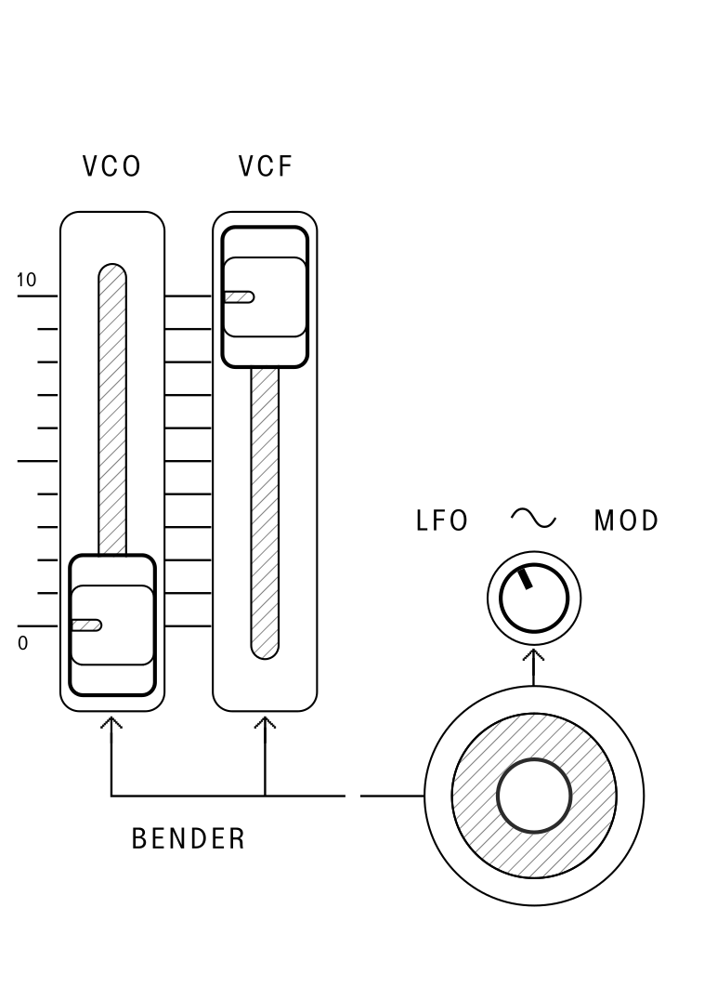

The voltage controlled oscillator (VCO) is where the
multiple oscillator waveforms or tone sources of the SB01 are
created.
The MOD depth control adjusts the amount that the
LFO will modulate the pitch of the oscillator, depending on
the waveform selected in the MODULATOR section.
The RANGE selector knob controls the pitch of the
oscillator in one octave steps from 16’ to 2’. When this knob is set to
8’ and the TRANSPOSE is set to M, the lowest C note maps to
the middle C of a piano.
Tip: In the CONFIGURATION TOOL, there
is an option to toggle the RANGE to a 32'
setting for access to even lower pitches.
Waveforms
The SAW wave contains a fundamental sine wave and its
integral harmonic sine waves at a fixed ratio of 1/n. This wave
makes a good starting point for brass, string, and guitar tones.
The PULSE wave contains the same fundamental sine wave
and harmonics as the sawtooth, except there are no even-numbered
harmonics. This wave has a hollow sound that is suitable for
woodwinds.
Pulse Width
PULSE WIDTH modulation allows control over the duty
cycle of the square wave, which is the proportion of time that a pulse
waveform is high or low. For example, a square wave has equal parts high
and low, like this:
FIGURE 1.4
While a wave with a narrower pulse width may look like this:
FIGURE 1.5
Both of these examples have the same frequency, but the harmonic
content of the pulse wave will vary in proportion to the width of the
pulses.
The PULSE WIDTH switch controls the mode that the
modulation will operate in:
In LFO setting, the triangle wave LFO
controls pulse width and the PULSE WIDTH slider controls
the depth of modulation applied.
In MANUAL setting, the PULSE WIDTH
slider manually controls the pulse width of the square wave from 50% to
5%.
In ENV setting, the envelope shape controls pulse
width and the PULSE WIDTH slider controls the depth of
modulation applied.
Source Mixer
FIGURE 1.6
The SOURCE MIXER section contains controls to sum
together the tone sources created by the VCO into various
proportions before sending them to the VCF, with the
addition of white noise and sub-oscillator waveforms.
The PULSE level controls the amount of pulse waveform
that is mixed in. The pulse width is configured using the controls in
the VCO section.
The SAW level controls the amount of sawtooth wave that
is mixed in.
The SUB OSC level controls the amount of sub-oscillator
that is mixed in. The sub-oscillator is divided down from the oscillator
and will thus be exactly one or two octaves lower than the
VCO pitch. Using the SUB OSC switch, the
output can be set to:
A square wave one octave below
A square wave two octaves below
A 25% duty cycle pulse wave two octaves below
The NOISE level controls the amount of white noise that
is mixed in.
Voltage Controlled Filter
(VCF)
FIGURE 1.7
The voltage controlled filter (VCF) is used to shape the
tone color of the combined sound coming from the
SOURCE MIXER section by cutting or boosting harmonics in
the sound. The VCF in the SB01 is a four-pole low-pass
filter based on the IR3109.
The FREQ slider controls the cutoff point of the
low-pass filter to define the brightness of the sound, with the lower
position cutting frequencies and the highest position letting all
frequences pass.
The RES slider controls the amount of filter feedback
(sometimes called resonance) that is applied at the cutoff point of the
filter. This can emphasize certain harmonics and boost frequencies when
shaping a sound or moving the cutoff.
The ENV slider controls the amount of depth that the
output of the envelope generator modulates the filter cutoff position.
The cutoff frequency will change with each note in the pattern of the
ADSR pattern previously set, giving articulation to each note’s
brightness.
The MOD slider controls the amount of depth that the
LFO modulates the filter cutoff position. The filter cutoff
will change depending on the waveform selected in the
MODULATOR section.
The KYBD slider controls the amount of keyboard
CV that is applied to the filter cutoff based on the note
played. This can be useful for creating sounds that become brighter as
higher notes are played.
Self-Oscillation
With the resonance control set to maximum, the resonant peak of
filter will feed back into itself to the point of self-oscillation. This
type of oscillation results in a pure sine wave with no harmonics.
To explore the filter in self-oscillation, set FREQ to
about half, and set RES and KYBD to the
maximum. The filter output will track the keyboard note played to within
1%. Use the FREQ slider to adjust the offset or turn down
the other tone sources in the SOURCE MIXER to taste.
Voltage Controlled Amplifier
(VCA)
FIGURE 1.8
The voltage controlled amplifier (VCA) section controls
the amplitude, or volume of a note over time as it is played.
When the VCA is set to GATE mode, the
volume of the note will be at the maximum as soon as a note is played,
and will stop as soon as the note is released.
When the VCA is set to ENV mode, the volume
of the note will follow the shape of the envelope generated by the
settings in the ENV section.
Envelope Generator (ENV)
FIGURE 1.9
The envelope generator is a standard four-stage envelope. It can be
used to modulate pulse width, filter cutoff, and most commonly- the
amplitude of sound over time.
An envelope works in two stages. First, when the envelope is
triggered (by a keypress or gate), it will increase its voltage to the
maximum amount in a period of time controlled by the “attack” parameter.
Once the maximum voltage has been reached, the envelope will decrease to
another voltage level determined by the “sustain” parameter. The time it
takes to get to the sustain level after the attack phase is controlled
by the “decay” parameter. The envelope will stay at the sustain level
until the note is let go.
Once the note is released, the envelope will return to zero voltage.
The amount of time this takes is controlled by the “release” parameter.
In summary – attack, decay, and release all control the time constants,
while sustain controls the level.
FIGURE 1.10
The envelope is the primary way of shaping of a sound, especially
when routed to the filter cutoff. For example, a typical “pluck” sound
has no attack, a short delay, no sustain, and no release, while a “pad”
sound may have a long attack and decay, a middle sustain, and a long
release.
On the SB01, the envelope controls are:
A – Attack time of the envelope
D – Decay time of the envelope
S – Sustain level of the envelope
R – Release time of the envelope
Additionally, the three settings of the ENV mode switch
controls how the envelope is triggered.
In GATE mode, the envelope is started by a keypress
event and will transition to the release phase when the last key is let
go. If additional notes are played, the envelope will not reset to the
beginning.
In GATE+TRIG mode, the envelope will be started by a
keypress event and will transition to the release phase when any key is
let go. If additional notes are played, the envelope will reset at the
beginning of each new note.
In LFO mode, the envelope will be triggered by each
cycle of the LFO when a note on the keyboard is played and
held. The LFO/CLK RATE will also now reset on the first key
press.
Modulator (LFO/CLK)
FIGURE 1.11
The MODULATOR section houses a low-frequency oscillator
(LFO) and RANDOM waveform (Sample & Hold)
that can be used to modulate several parameters across the synth
including pitch, pulse width, and filter cutoff.
The LFO/CLK RATE slider controls the frequency of the
LFO. The rate of cycling controls the speed of the
arpeggiator and sequencer unless they are driven by an external clock
source using the TRIG input.
Similar to bypassing the internal clock by using the
TRIG input, enabling MIDI clock will decouple
the LFO rate and allow it to free-run for modulation
purposes.
The WAVEFORM switch selects the ouput shape of the
LFO. Triangle and square are the output waveforms from the
LFO, while the RANDOM output waveform is
generated digitally. Each cycle of the LFO will produce a
new random modulation level that is held until the next clock cycle.
The NOISE waveform is the internal white noise source
and is not affected by the rate control.
Portamento
FIGURE 1.12
Portamento is the musical term for continuous pitch glide or slew
between notes.
To enable portamento, toggle the PORTAMENTO switch to
either ON or AUTO. The glide speed can be
controlled using the PORTAMENTO knob.
In the ON position, the SB01 will glide in pitch between
every note change.
In AUTO mode, the glide effect activates only when
playing a new key while the previous key is still held down
(legato playing). This “hold-and-glide” allows for selective
control over how portamento is applied.
Example:
Hold the C key. Then, play the G key.
The oscillator will glide from C to G.
If you release the C key before playing G, no glide will occur.
In the OFF position, the glide effect will not be
applied.
Tip: The SB01 has independent
PORTAMENTO settings for each channel of
INTERNAL or EXTERNAL control. Portamento speed
will be the same between both channels, while changing the toggle in
each channel refreshes the PORTAMENTO state.
Bender

FIGURE 1.13
The main performance element of the bender section is the
joystick.
Pitch and Filter Bend
The left and right direction of the bender joystick can be configured
to control both the oscillator pitch and the filter cutoff. The
BENDER VCO and BENDER VCF controls set the
depth of modulation applied to each parameter when the joystick is
moved.
LFO Mod / Vibrato
Pushing the joystick forward increases the amount of LFO
modulation (Sine wave) that is applied to VCO pitch. The
modulation depth is set by the LFO MOD knob above the
joystick.
Vibrato Latch
Clicking the joystick will momentarily toggle the LFO
vibrato modulation on. Holding SHIFT while clicking will
latch the vibrato on and off, having the same effect as holding the
joystick forward for constant vibrato effect.
Mod CV
The MOD CV input can be used to control the bender using
an external control voltage. Signal applied to the MOD CV
input is equivalent to moving the bender joystick to the right.
Tip: Using a cable, you can route the CV Output
from the EXTERNAL Channel into the MOD CV
Input to modulate and sequence the filter cutoff or pitch transposition
from a sequence track.
Keyboard
The SB01 has 32 keys and 2.5 octaves, but can be played as a 56 key
keyboard by using the TRANSPOSE button.
With the RANGE of the VCO is set to
8' and the TRANSPOSE is set to
NORMAL, the lowest C note maps to the middle C of a
piano.
Hold
Any key played can be held on after release by using the
HOLD button (indicator will light).
When applied during a sequence, the HOLD function will
sustain every note. The PEDAL input will also activate the
HOLD function when pressed, similar to the damper pedal of
a piano.
Chord Mode
CHORD Mode is a keyboard feature available on the
EXTERNAL Channel while using MIDI. This mode
allows a programmed interval or chord to played back by a single
keypress.
Press SHIFT + HOLD to activate the
CHORD function. If the chord requires more than one hand,
use the HOLD function to play and hold down the individual
notes, then activate the CHORD function. The lowest note of
the saved interval will now trigger and transpose the entire chord
across the keyboard.
Transpose
To enable the keyboard transpose function, hold the
TRANSPOSE button down while pressing any key except for the
lowest C key. The indicator will light and the keyboard will now play in
the key of the chosen note.
If you press a key lower than the lowest C, it will be
transposed down by the distance in pitch between the pressed
key and the C.
If you press a key higher than the loewst C, it will be
transposed up by the interval between the pressed key and
C.
To disable the Transpose function, hold the TRANSPOSE
button down while pressing the lowest C. The indicator will go out and
the SB01 has returned to the normal condition (the key of C.)
Tip: You can freely change transposition while the
Arpeggiator or Sequencer are playing.
Transpose Latching
Press SHIFT + TRANSPOSE to activate the
transpose LATCH function. This mode allows the function to
latch ON without needing to hold the button down while pressing a new
key, allowing a single hand to dynamically transpose a running
arpeggiator or sequence.
Arpeggiator
The Arpeggiator will automatically play any held notes as a
progressive arpeggio.
Use the HOLD button to latch notes into the Arpeggiator
and free hands for adjusting the sound.
Without using the HOLD function , any new notes played
into the Arpeggiator will reset the LFO/CLK RATE on the
first key press.
The speed of the Arpeggiator is controlled by the speed of the
LFO/CLK RATE. If the SB01 is configured to accept an
external MIDI clock, the rate of the Arpeggiator will follow.
Arpeggiator Modes
To enable the Arpeggiator, press or combine any of the three
Arpeggiator mode buttons:
UP: plays the arpeggiated notes from lowest to
highest
U+D: plays the arpeggiated notes from lowest to highest
then reverses
DOWN: plays the arpeggiated notes from highest to
lowest
U+D + UP: caterpillar up mode — the
pattern will move two steps forward and one step backward
UP + DOWN: corner mode — the pattern will
repeat the first and last steps before changing direction
DOWN + U+D: caterpillar down mode — the
pattern will move two steps backward and one step forward
DOWN + U+D + UP: plays the
arpeggiated notes in random order
Tip: You can switch modes while the Arpeggiator is
playing.
To disable the Arpeggiator, press the currently active mode
again.
The TRANSPOSE function and transpose LATCH
feature are both available to use with the arpeggiator.
Sequencer
The SB01 features a digital sequencer capable of storing and playing
up to 256 steps in different creative patterns.
Tempo Control
Adjust the tempo using the LFO/CLK RATE knob.
Connect an external clock signal to the TRIG
input.
Synchronize with an external MIDI clock.
Sequence Loading
Start Recording: Press the LOAD button
and enter notes from the keyboard.
Stop Recording: Press the LOAD button
again.
Add Rests: While recording, press the
REST button to add an empty step.
Add Legato/Slides: While recording, press and hold
the LEGATO button while entering notes to tie them
together.
Sequence Playback
Play: Press the PLAY button. The
sequence will loop continuously until stopped.
Stop: Press the PLAY button
again.
Reset Function: Hold SHIFT and press
the RESET button to reset a running sequence to the first
step.
Sequence Play Directions
To change the sequencer playback direction, hold SHIFT
and press or combine any of the three Arpeggiator mode buttons:
UP: plays the sequence from first note to last
U+D: play direction reverses after reaching the last
note
DOWN: plays the sequence from last note to first
U+D + UP: caterpillar up mode — the
sequence will move two steps forward and one step backward
UP + DOWN: corner mode — the sequence will
repeat the first and last steps before changing direction
DOWN + U+D: caterpillar down mode — the
sequence will move two steps backward and one step forward
DOWN + U+D + UP: plays the
sequence in random order
Tip: You can switch directions while the sequencer
is playing.
Both the INT and EXT tracks can have
independent sequencer directions.
Sequence directions are not retained when storing a sequence.
Storing and Recalling
Sequences
The SB01 has 64 memory locations split across two banks that can be
used for storing user sequences.
Each key on the keyboard represents a save location, of which there
are 32 total in each bank. The currently active sequence can be saved to
memory while while stopped or playing.
Saving a Sequence
Bank A: Hold SHIFT +
WRITE A + KEY (1-32)
Bank B: Hold SHIFT +
WRITE B + KEY (1-32)
Tip: Writing to a save location will overwrite any
existing stored sequence.
Selecting Active Bank
Hold the BANK SELECT button and press
WRITE A or WRITE B to select bank A or B for
sequence recall.
Recalling Sequences
Jump Mode:
Hold the JUMP button and press a KEY
location to jump to the stored sequence.
The target sequence will start immediately on the next clock
step
The target sequence can be restarted by entering the same location
again.
Chain Mode:
Hold the CHAIN button and press a KEY
location to chain to the stored sequence.
The target sequence will start immediately after the current
sequence finishes playing.
Multiple KEY locations can be entered serially in this
mode, and the sequencer will chain all queued sequences in the order of
entry until repeating.
Modulo Mode:
Hold the JUMP + CHAIN buttons and press a
KEY location to “Modulo” jump to the stored sequence.
This mode will keep the absolute step number constant when jumping
sequences, allowing alternation between sequences while keeping the
underlying sequence length.
Internal / External Channel
The SB01 has a unique dual channel control architecture consisting of
two parallel and independent keyboard and sequencer channels.
Each channel button represents the active control window, which shows
the current state of the sequencer, arpeggiator, hold, and transpose
functions for the selected channel. Both channels share the same clock,
and can also be controlled together in BOTH mode.
Internal Channel
The INTERNAL track will always correspond to and control
the internal synth “engine” of the SB01. It can also be configured to
send MIDI data out.
External Channel
The EXTERNAL track offers another control layer on top
of the internal synth, allowing a second keyboard, arpeggiator, and
sequencer to independently control an external device that accepts
CV / GATE or TRS / USB MIDI.
BOTH Mode
Press the INTERNAL and EXTERNAL buttons
together to enter BOTH mode. While both channel LED’s are
lit, all button actions will now apply to both channels.
Similarly, all keyboard inputs will apply to both channels even if
they are in different modes. For example, different arpeggiator mode
settings at the same time in each channel will respond differently to
the same chord input from the keyboard.
When a function is active in both channels, the button will toggle
between INT and EXT channel colors to reflect
this. Exit BOTH mode by pressing INT or
EXT to enter an individual channel’s control.
Tip: While using BOTH mode to control
both channels simultaneously, the interface will follow a paradigm to
prioritize action towards unifying channel states. For example, if one
channel is in PLAY and another is stopped, pressing the
PLAY button in BOTH mode will cause the
stopped channel to start playing so they are now both in
PLAY. Another press will stop both channels.
Power
The SB01 is powered by a rechargeable battery. To turn the synth on,
slide the power switch on the left corner of the unit towards the right.
The power LED above the TUNE knob will light
amber.
To charge the synth, connect a USB-C power supply to the
USB connection on the back of the unit. The power LED
will turn green to indicate that the unit is currently
charging.
If the synth is low on battery, the power LED will begin blinking at
the rate of the LFO.
If depleted, the power LED will flash but the synth will not play
until charged again.
Checking Battery Level
To check the battery level, hold SHIFT while pressing
the BATT button. The approximate battery level will be
indicated by the seven LEDs in the sequencer section.
Powering External Gear
The SB01 can also be used as a power source for external gear using
it’s built-in battery. Simply connect a device to the USB port on the
back of the synth while power is active. You can even charge your phone
from it.
Connect the synthesizer to your computer using a USB-C cable and
click the on-screen notification.
If you don’t see a notification, try directing your browser to control.playsuperlative.com.
When the device is connected, the app will look like FIGURE 2.1.
FIGURE 2.1
Setting MIDI Channels
Use the MIDI CHANNEL IN and
MIDI CHANNEL OUT selectors to set which channels the synth
will listen to and transmit MIDI information on. There are separate MIDI
channel settings for the INTERNAL and EXTERNAL
channels.
Enabling MIDI Clock (MIDI
Sync)
Use the MIDI CLOCK TRS IN switch to enable or disable
MIDI clock sync on the TRS MIDI input.
Use the MIDI CLOCK USB IN switch to enable or disable MIDI
clock sync on the USB MIDI input.
When enabled, the synth will listen to incoming MIDI clock messages and
clock the sequencer and arpeggiator from this clock source, ignoring the
LFO/CLK rate.
The CLOCK SUBDIVISION slider divides the incoming MIDI
clock and sets the speed of the arpeggiator and sequencer.
32’ Range
When enabled, the RANGE toggle will span from 32’ to 4’
instead of the default 16’ to 2’ — letting you access the lowest
possible octave the VCO can produce.
Reset to Factory Defaults
User configuration can be reset to factory defaults by holding both
MEMORY buttons (JUMP + CHAIN)
while powering on the device.
Tip: Use the sun/moon icon at the top right of the
app to switch between light and dark mode.
Tuning tables are edited in the CONFIGURATION TOOL app.
FIGURE 2.2.
FIGURE 2.2
An adjustable tuning offset can be applied to each key on the SB01 in
cents (-99 to +99). Click and drag on a key to adjust its offset, or
enter a value directly in the input box. After entry, the offset will be
directly applied to the connected synth.
Upon saving, the tuning table will be stored in the user tuning table
slot.
Setting Active Table
If the first key on the keyboard is held at startup the custom tuning
table will be loaded. If no key is held at startup, the default tuning
table will be loaded.
Load Custom Tuning Tables
Importing a .tun file allows you to load an existing tuning table
directly and go beyond +-99 cents. Press the IMPORT .TUN
button and navigate to a .tun file, and the table will be applied.
Preset Tuning Tables
For microtonal exploration, several presets options are
available.
MIDI Implementation Chart
Applies to both TRS MIDI and USB MIDI
Function
Transmitted
Recognized
MIDI channels
1 to 16
1 to 16
Note numbers (A4 = 440 Hz)
F2 (41) to C7 (96)
F2 (41) to C7 (96)
Pitch Bend
No
Yes
Mod Wheel
No
Yes
Sustain Pedal (CC# 64)
Yes
Yes
MIDI Clock
No
Yes
Song Select
No
Yes
Start / Continue / Stop
No
Yes
MIDI Mod Wheel
Incoming mod wheel messages to the INTERNAL channel will
control the same CV as the MOD CV input. This
can be used to control the filter or oscillator.
MIDI Latency
The SB01 features class-leading MIDI latency, measuring
at 30µs-1ms on USB.
Firmware Update
To enter firmware update mode, perform the following:
Turn off your SB01 using its power switch
Connect to your computer with a USB-C cable
Press and hold the SHIFT button while turning power
on
The LFO/CLK RATE LED should now blink orange and green.
In a compatible browser, navigate to firmware.playsuperlative.com. Note that in some
instances your browser may automatically prompt you for this when the
device is first connected.
To exit firmware update mode, simply turn your synth on and off
again.
Browser
Windows
Mac OS
Linux*
Chrome
✔
✔
✔
Opera
✔
✔
✔
Edge
✔
✔
✔
Safari
—
❌
—
Firefox
❌
❌
❌
* For Linux users, you may have to add a udev rule to allow
access to the USB device. Refer to this guide for more
information.
Linux WebUSB
Compatibility
Linux generally don’t ship with the necessary permissions to let the
user open USB devices. If you are experiencing problems with WebUSB (the
feature that allows control.playsuperlative.com and firmware.playsuperlative.com to function), this is
most likely the issue.
Please note that these instructions are for Debian-like
distributions, the fix for your distro may be different.